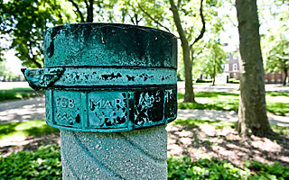

Constructed in 1904 in the Colonial Revival style, Building 403 is a 2½ story house faced with red pressed brick set on a foundation of schist. A gabled front wing projects from the gabled-roof main block of the house. A wooden porch with Tuscan columns supporting a shallow hipped roof wraps around the west front and the north side of the house. The columns are linked by balustrades with turned posts. Raking denticulated wood cornices outline the gable ends, and denticulated wood cornices set off the main roof slopes.
Building 403 was the final home built of the six brick houses facing the old southwestern shoreline of Governors Island, now approximately the line of Hay Road. This group, designed according to standardized Quartermaster General plans, incorporated five double sets (Buildings 404, 405, 406, 407 and 408) of officers' housing as well as this single-unit dwelling.

Sundial in the garden outisde Building 403.
In 1986, during the 100th anniversary celebration of the Statue of Liberty, French President Francois Mitterrand (1919-1996) visited the home. Two years later, Mikhail Gorbachev, General Secretary of the Communist Party of the Soviet Union, used Building 403 during his summit meeting with President Ronald Reagan (1911-2004) on Governors Island. Both visits are commemorated by plaques on the porch walls.